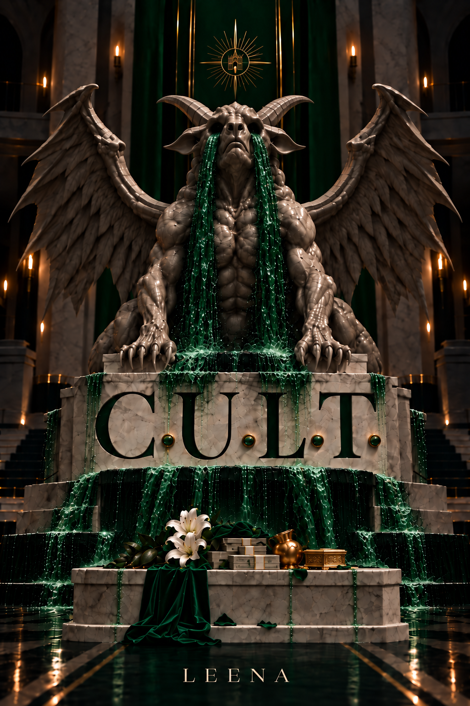

C.U.L.T.
Everyone calls it a cult. Inside, they call it society.
C.U.L.T. does not ask its people to abandon the world.
It gives them another one.
Jobs. Housing. Food. Private hospitals. Businesses. Protection. Entire families can live and die within its network without ever needing to rely on anyone outside it.
All it asks in return is loyalty.
Asley knows exactly what loyalty can buy.
Born Whiteborn—a trait considered sacred within the Covenant—her discovery transformed her family from poverty into privilege almost overnight.
Now she is the wife of Anon, the young leader at the centre of C.U.L.T., dressed in pale colours, displayed at ceremonies and revered by people who lower their heads when she passes.
To them, she is blessed.
To Anon, she is proof that God keeps his promises.
Marcus has never believed in any of it.
He is a businessman, a criminal, and one of C.U.L.T.’s most important suppliers. For years, he has been content to take their money, deliver what they order and leave their strange religion to them.
Until Anon offers him something far more dangerous than a business deal.
A place inside.
The deeper Marcus is allowed into the Covenant Under Law and Tradition, the harder it becomes to tell where religion ends, business begins, and organised crime fits somewhere in between.
And the more he sees of the woman beside its leader, the more he begins to wonder what exactly C.U.L.T. protects—
and what it owns.
Because the most dangerous societies aren’t the ones that give you nothing.
They’re the ones that give you everything.
Want to read the full book?
Heart this so I know which books readers want me to prioritise.
♡ Reader interest